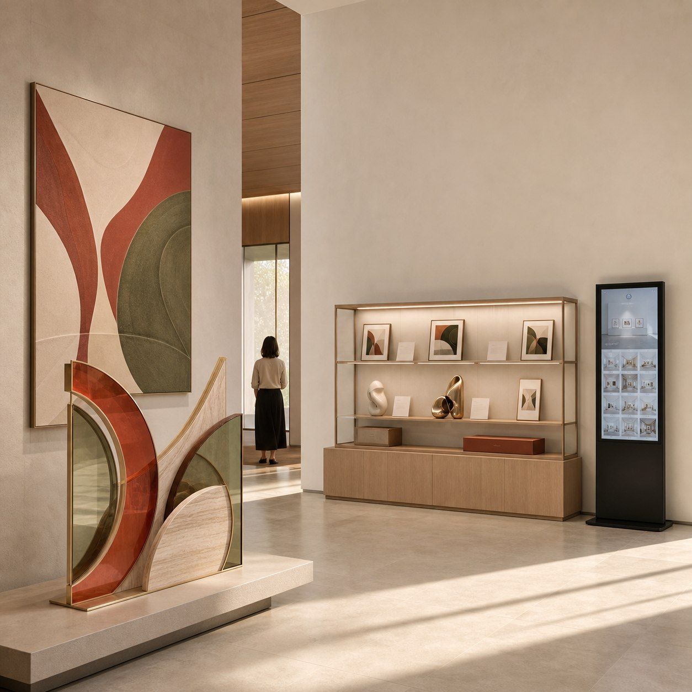
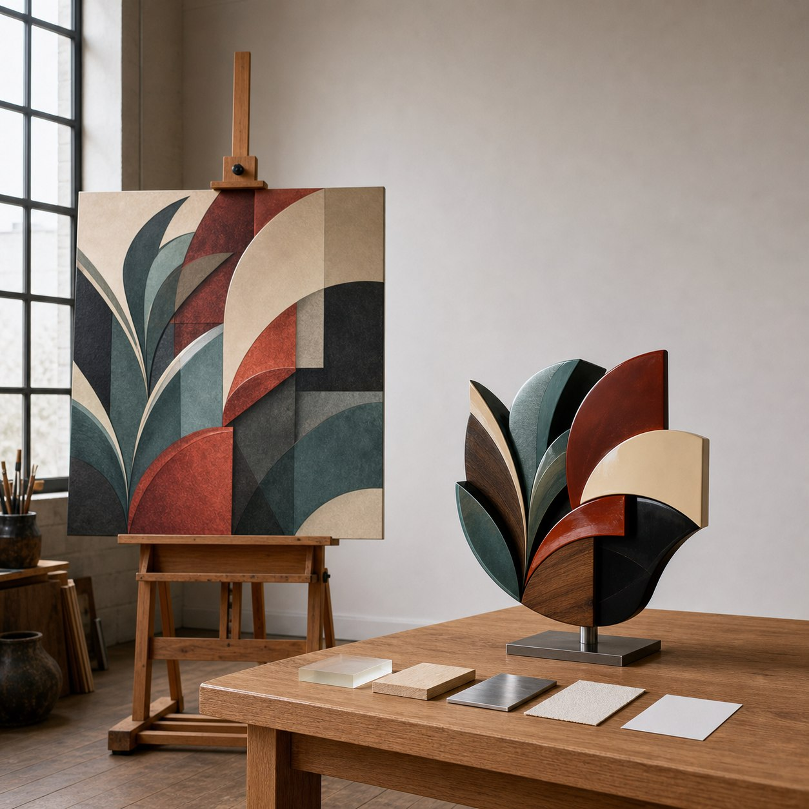
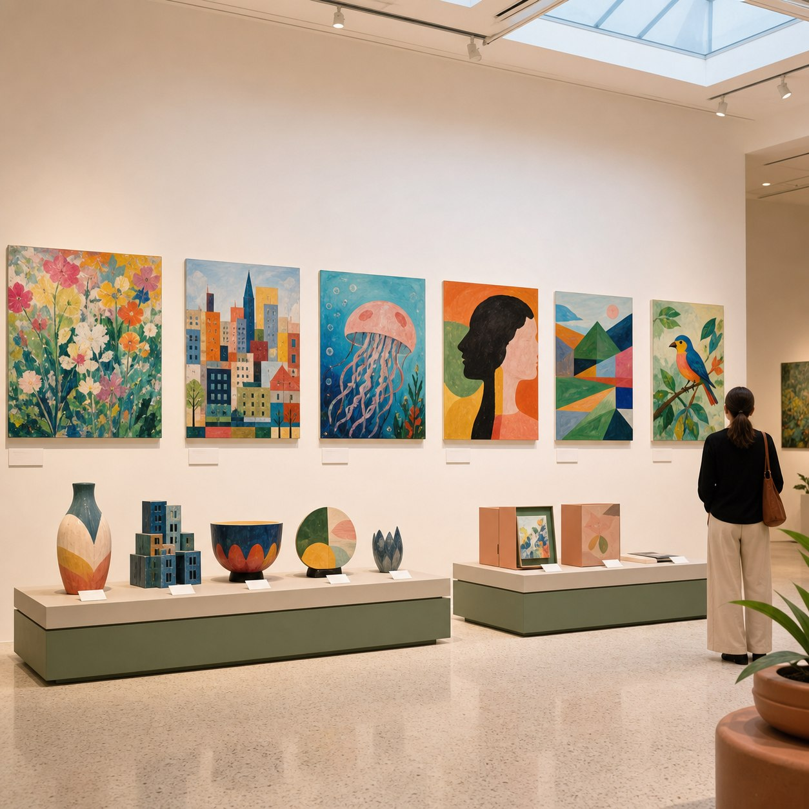
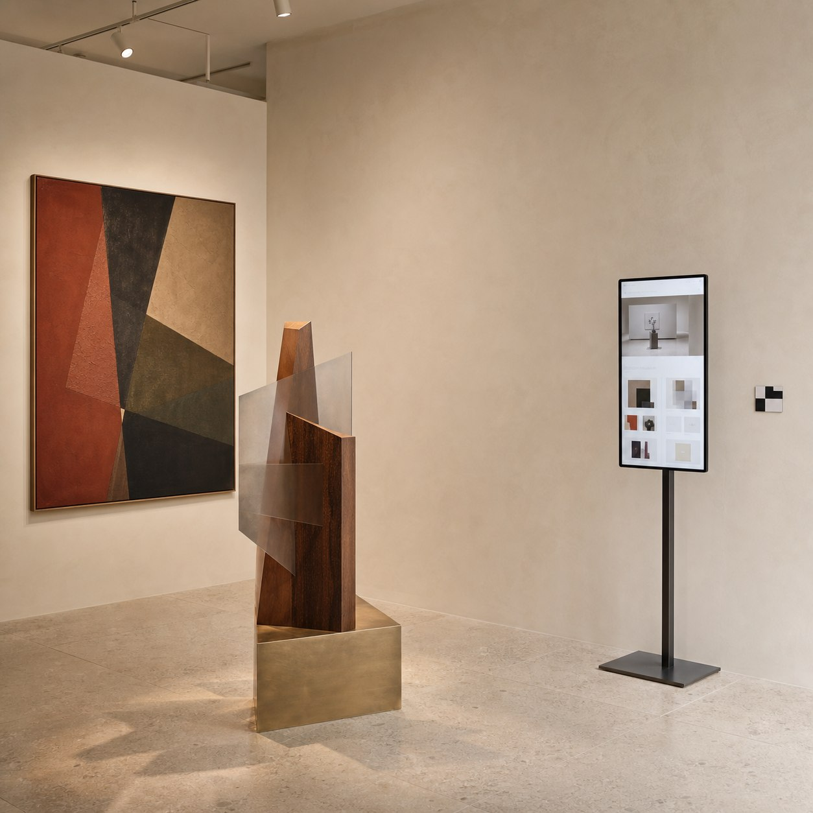

一件作品进入元维构，不一定要直接从制作开始。先看作品类型、预计用途和是否公开展示，才能判断更适合从哪一个合作入口进入。




艺术家与插画师：先判断实体转译
如果你是艺术家或插画师，可以从一件已有作品开始。我们先看画面中的层次、支撑、材质和观看关系，再判断它是否适合形成实体样本、收藏版本或展览版本。
这里的重点不是把平面作品机械地“做成立体”，而是先确认哪些视觉关系值得进入结构层，以及实体版本将承担展示、收藏还是空间叙事任务。
教育机构：先做示范样本或成果方案
如果你是少儿美术机构或课程团队，入口可能不是单件定制，而是先做示范样本或成果方案。确认方向后，再判断是否延展到班级成果、说明卡、包装或专业成果展。
示范样本能够在扩大制作前确认结构、材料、展示节奏和完成度边界，避免所有作品被套进同一种成品模板。
画廊与文化空间：从数字延展进入
如果你在运营画廊、展览或文化空间，现有内容也可以从数字延展进入：把原作、实体结构和展览资料整理成数字档案、二维码入口或网页展厅，方便后续展示与远程提案。
数字层不是替代现场，而是把一次展览中形成的作品信息、结构判断和空间记录继续保存下来，成为后续传播与合作的可用入口。
先做入口判断，再决定交付
关键不是一次把所有交付都做满，而是先看作品类型、预计用途、结构条件和公开边界，再选择合适的起点。
本文四张图片均为合作方向场景示意，不对应某个已完成客户案例。实际方案仍需根据作品来源、用途、结构条件和公开边界单独判断。